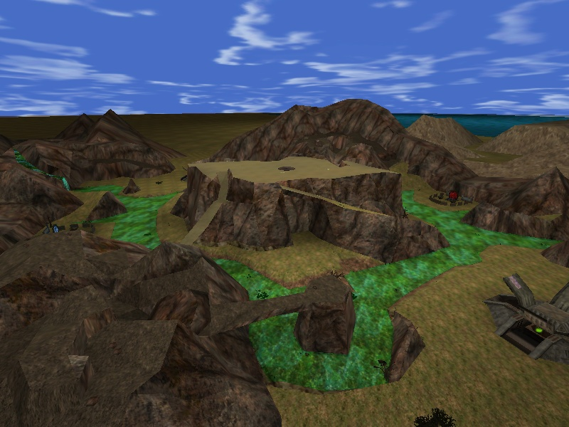

My program doesn't have bugs. It just develops random features.
User:Higor
From Unreal Wiki, The Unreal Engine Documentation Site
Posting some stuff I may turn into pages...
Moving SkyZoneinfo
Ready to embed code.
It's a normal SkyZone actor, but it alters it's location in runtime to generate a huge map effect. Depending on the ScaleDown value, the size of the actualy skybox may vary, but expect having to build a huge skybox. With it, endless terrain maps's boundaries won't be as noticeable.
The SkyZoneInfo actor.
//============================================================================= // MovableSkyZone. // Embed this actor into a map to make things easier //============================================================================= class MovableSkyZone expands SkyZoneInfo; var() float ScaleDown; //Scale down movement compared to play zone (division) var() vector PlayZoneOrigin; var vector MyOrigin; //Automatically set as this actor's initial location var() name ForceOnZone; //Force this specific skyzone on this specific zoneinfo var PlayerPawn LocalPlayer; var MovableSkyDummy Dummy; replication { reliable if( Role==ROLE_Authority ) MyOrigin, PlayZoneOrigin, ScaleDown, ForceOnZone; } simulated function LinkToSkybox() { } simulated function PreBeginPlay() { Super.PreBeginPlay(); MyOrigin = Location; if ( Level.NetMode == NM_DedicatedServer ) Disable('Tick'); } simulated event Tick( float DeltaTime) { local PlayerPawn P; local ZoneInfo aZ; if ( LocalPlayer == none ) { ForEach AllActors ( class'PlayerPawn', P) { if ( ViewPort(P.Player) != none ) { LocalPlayer = P; Dummy = Spawn( class'MovableSkyDummy', P); Dummy.MyZone = self; Dummy.POwner = P; if ( (ForceOnZone != '') && (ForceOnZone != 'None') ) ForEach AllActors ( class'ZoneInfo', aZ, ForceOnZone) { aZ.SkyZone = self; } return; } } } else Disable('Tick'); } simulated function UpdateLocation() { local vector newVec; local actor ignoreme; local rotator ignoreme2; LocalPlayer.PlayerCalcView( ignoreme, newVec, ignoreme2); newVec = (newVec - PlayZoneOrigin) / ScaleDown; SetLocation( MyOrigin + newVec); } defaultproperties { bStatic=False bAlwaysTick=True }
And a client dummy.
//============================================================================= // MovableSkyDummy. //============================================================================= class MovableSkyDummy expands Actor; var MovableSkyZone MyZone; var PlayerPawn POwner; event Tick( float Delta) { //Sanity checks, the MovableSkyZone isn't a static actor if ( MyZone == none ) return; MyZone.UpdateLocation(); } defaultproperties { bHidden=True bAlwaysTick=True RemoteRole=ROLE_None }
CTF-OutworldHold using it. The map limits aren't where they seem to be, can you guess where? 